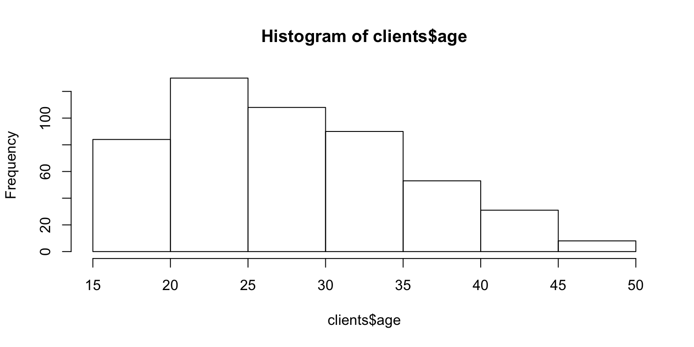
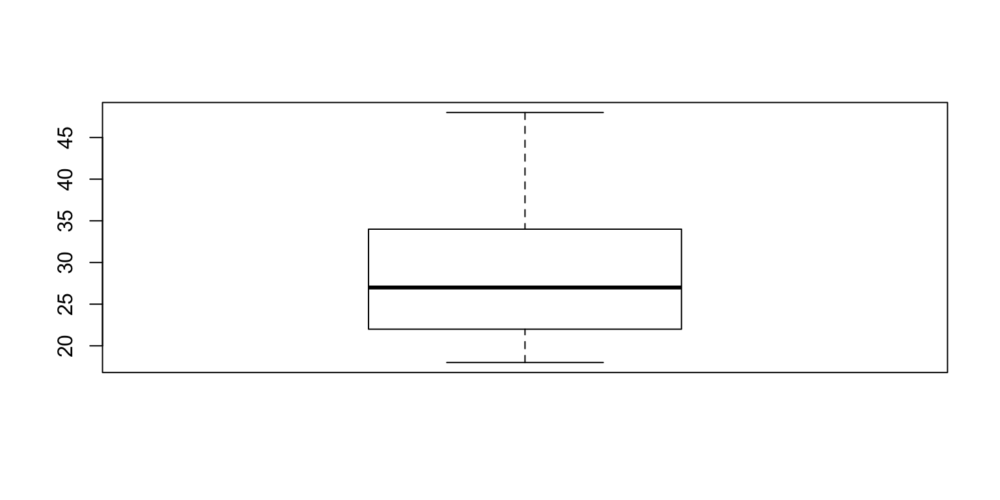
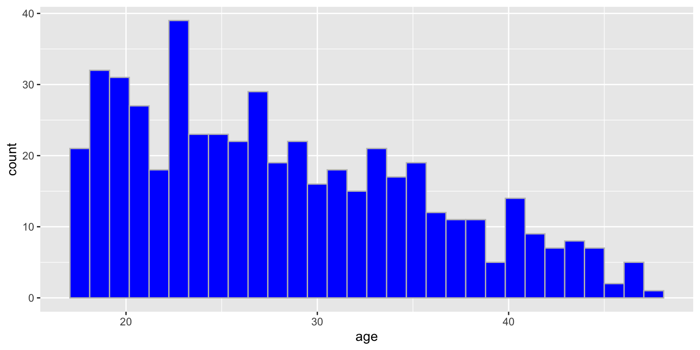
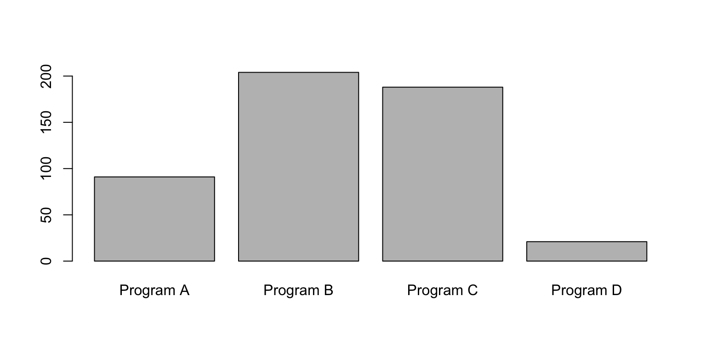
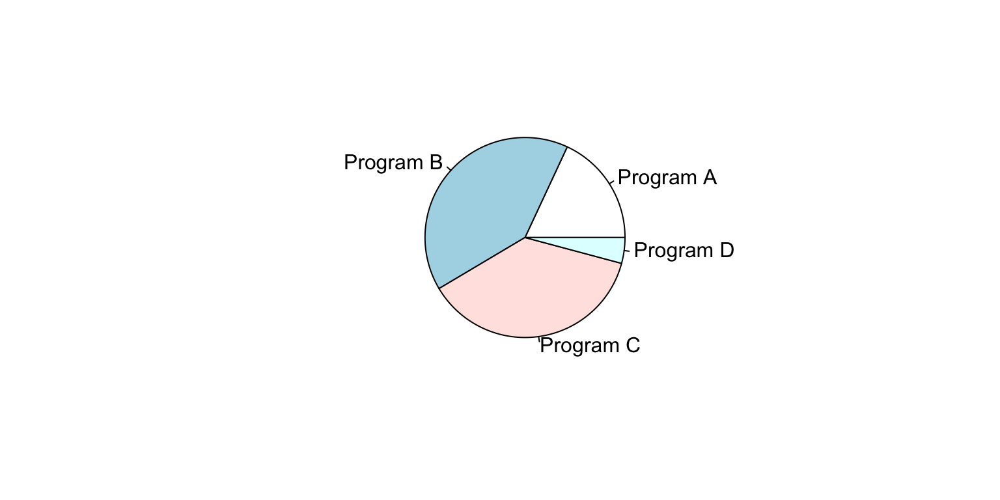
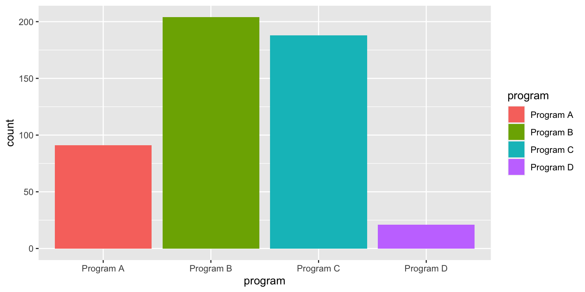

library(readxl)
clients <- read_excel("../../social-service-agency/social-service-agency.xlsx", sheet = "clients")
head(clients) # look at the data## # A tibble: 6 x 8
## ID age gender program mental_health_T1 mental_health_T2 latitude
## <dbl> <dbl> <chr> <chr> <dbl> <dbl> <dbl>
## 1 1838 22 Female Progra… 90.0 93.5 42.2
## 2 2132 18 Male Progra… 84.4 81.4 42.4
## 3 3935 33 Female Progra… 105. 101. 42.4
## 4 1458 25 Female Progra… 76.8 96.0 42.3
## 5 4304 27 Female Progra… 94.5 101. 42.1
## 6 1227 34 Female Progra… 84.4 97.9 42.2
## # … with 1 more variable: longitude <dbl>## Min. 1st Qu. Median Mean 3rd Qu. Max.
## 18.00 22.00 27.00 28.32 34.00 48.00


##
## Program A Program B Program C Program D
## 91 204 188 21

